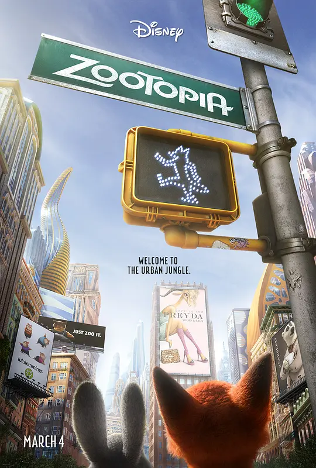

疯狂动物城

概况
导演: 拜伦·霍华德 / 瑞奇·摩尔 / 杰拉德·布什
编剧: 拜伦·霍华德 / 瑞奇·摩尔 / 杰拉德·布什 / 吉姆·里尔顿 / 乔西·特立尼达 / 菲尔·约翰斯顿 / 珍妮弗·李
主演: 金妮弗·古德温 / 杰森·贝特曼 / 伊德里斯·艾尔巴 / 珍妮·斯蕾特 / 内特·托伦斯 / 更多...
类型: 喜剧 / 动画 / 冒险
制片国家/地区: 美国
语言: 英语 / 挪威语
上映日期: 2016-03-04(中国大陆/美国) / 2020-07-24(中国大陆重映)
片长: 109分钟(中国大陆) / 108分钟
剧情简介
故事发生在一个所有哺乳类动物和谐共存的美好世界中，兔子朱迪（金妮弗·古德温 Ginnifer Goodwin 配音）从小就梦想着能够成为一名惩恶扬善的刑警，凭借着智慧和努力，朱迪成功的从警校中毕业进入了疯狂动物城警察局，殊不知这里是大型肉食类动物的领地，作为第一只，也是唯一的小型食草类动物，朱迪会遇到怎样的故事呢？近日里，城中接连发生动物失踪案件，就在全部警员都致力于调查案件真相之时，朱迪却被局长（伊德瑞斯·艾尔巴 Idris Elba 配音）发配成为了一名无足轻重的交警。某日，正在执勤的兔子遇见了名为尼克（杰森·贝特曼 Jason Bateman 配音）的狐狸，两人不打不相识，之后又误打误撞的接受了寻找失踪的水獭先生的任务，如果不能在两天之内找到水獭先生，朱迪就必须自愿离开警局。朱迪找到了尼克，两人联手揭露了一个隐藏在疯狂动物城之中的惊天秘密。
预告片